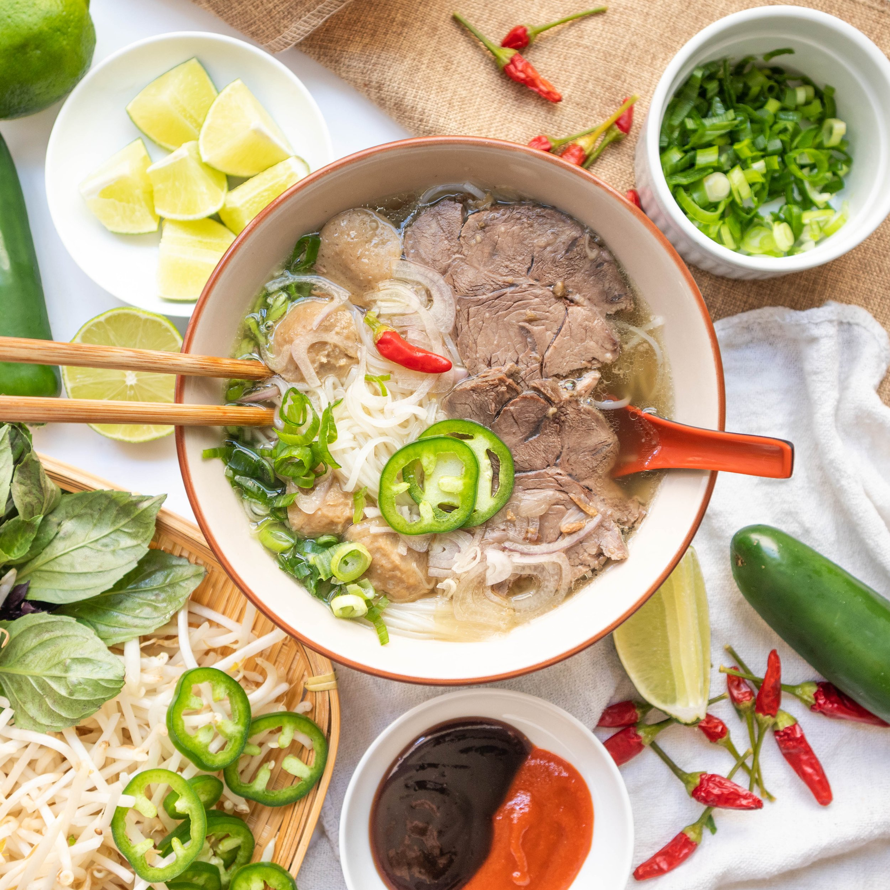

Pho bo`

Description
Pho is a traditional Vietnamese soup consisting of clear broth, rice noodles, herbs, and meat,
usually beef (Pho Bo) or chicken (Pho Ga). It's a beloved dish in Vietnamese cuisine,
known for its aromatic broth and fresh, flavorful toppings. Pho is often enjoyed as a comforting meal,
particularly for breakfast or as a hearty lunch or dinner.
Ingredients:
For the broth:
- 4-5 lbs beef bones (for Pho Bo) or chicken bones (for Pho Ga)
- 2 large onions, halved
- 1 piece of ginger (about 4 inches), sliced
- Spices: star anise, cloves, cinnamon stick, coriander seeds
- Salt and sugar
- Water
For the soup
- Thinly sliced beef eye round, sirloin, or chicken breast
- Dried rice noodles
- Onion, green onions, cilantro, Thai basil
- Bean sprouts, lime wedges
- Hoisin sauce, Sriracha sauce
Steps:
-
Prepare Broth:
- Roast bones (if beef) in the oven.
- Combine bones, onions, ginger, spices, salt, and sugar in a stockpot.
- Cover with water, bring to a boil, then simmer for 4-6 hours (beef) or 2-3 hours (chicken). Skim foam.
-
Prepare Toppings:
- Slice onion, green onions, herbs.
- Arrange bean sprouts, lime, hoisin, and sriracha.
-
Cook Noodles:
- Cook rice noodles according to package instructions.
-
Assemble Pho:
- Strain broth, discard solids.
- Arrange cooked noodles in bowls, top with sliced meat.
- Ladle hot broth over noodles and meat.
-
Serve:
- Serve with prepared toppings and sauces.
- Customize with lime, hoisin, sriracha, herbs, and bean sprouts.